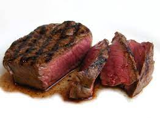

Steak

Meet Meat
Convert your Vegan friends in their droves with this step by step guide to
cooking the best steak. They'll be munching down on bloody, pink, dripping
slices of dead cow before you know it.
An actual South African wrote this recipe. Cooking meat is akin to a
religious practice for them. It is a ritual. Now go and convert the
masses!
Ingredients
- 500g, 1 inch thick cut, Grass Fed Rump Steak
- Olive oil
- Salt and Pepper
- A bloody hot coal fire
Steps
-
Take the meat out of the fridge, marinade in olive oil, salt and pepper
and let it sit for 1 hour. This allows the meat to come up to room
temperature.
- Make a hot coal fire. Wait until all the coals are red.
-
Place your hand three inches from the coals, if you instantly have to
pull your hand away, it's go time. If you can hold your hand there for
more than a second, it's not hot enough, either wait or add more coals.
- Place the grid over the fire, let it warm up for a few seconds.
- Grab your lovely meat.
- Place it gently on the grid over the center of the coals.
-
Lift it once to stop it sticking and then leave it alone, don't fiddle.
-
As soon as you start to see juices or blood rise to the surface (approx
2 minutes), turn the steak.
- Repeat Step 7.
-
It will be harder to see the juices rising on the seared side, so just
time it to 2 minutes.
- Take the steak off the fire and let it rest for 15 minutes.
- Serve to the heathen masses and watch them succumb to the truth.